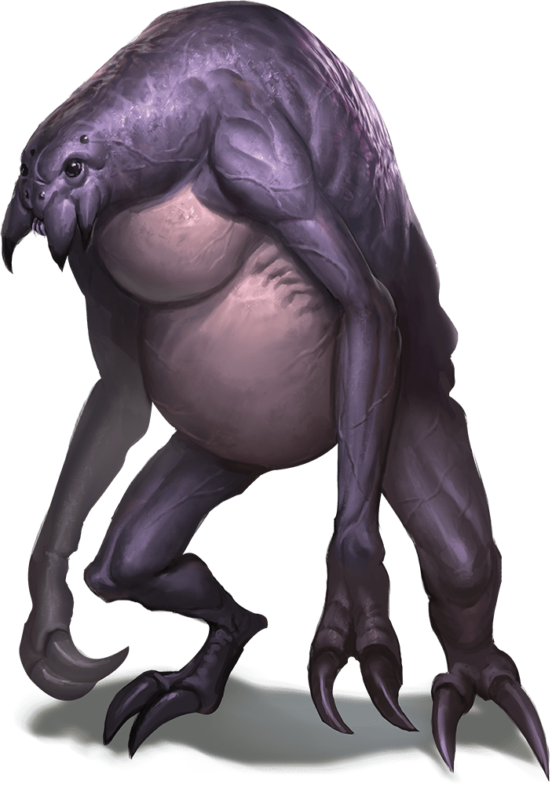
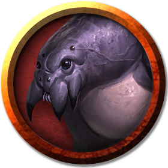

Ettercap
Ettercaps are humanoid spiders that tend, feed, and watch over spiders the way a shepherd oversees a flock of sheep. They lair deep in remote forests.

Fine strands of silk stream from glands in an ettercap's abdomen, letting it shoot sticky strands of webbing to bind, entrap, or strangle its victims. It can also use its webbing to fashion elaborate snares and nets, which often festoon its lair.
Quiet Killers. When travelers and explorers venture into an ettercap's territory, the ettercap stalks them. Some meet their end wandering blindly into traps or sections of forest enclosed by webs. Others, the ettercap garrotes with strands of web or envenoms with its poisonous bite.
Sylvan Despoilers. Though they dwell in the wilds, ettercaps have no desire to live in harmony with nature. A forest infested with ettercaps transforms into a gloomy place, choked with webs and infested with giant spiders, giant insects, and other sinister predators. Creatures that wander too far into such a wood are soon lost in a maze of webs that dangle with the bones and lost treasures of the ettercaps' victims.
Enemies of the Fey. Ettercaps are natural enemies of fey creatures. The foul creatures set web snares to catch sprites and pixies, which they hungrily devour, and will encase a dryad's tree in webbing in a vain attempt to trap the dryad. Otherwise timid fey will sometimes approach outsiders for help in dealing with an ettercap infestation, being ill-equipped to deal with the malevolent creatures themselves.
Variant: Web Garrote. Some ettercaps like to strangle prey using garrotes fashioned from webbing. An ettercap so armed gains the following action option, which it uses in place of its claws.
Web Garrote. Melee Weapon Attack: +4 to hit, reach 5 ft., one Medium or Small creature against which the ettercap has advantage on the attack roll. Hit: 4 (1d4 + 2) bludgeoning damage, and the target is grappled (escape DC 12). Until this grapple ends, the target can't breathe, and the ettercap has advantage on attack rolls against it.
Environment
Forest, Ruins, Underdark
Token

Ettercap
Medium monstrosity, neutral evil
- Armor Class 13 (natural armor)
- Hit Points 44 (8d8 + 8)
- Speed 30 ft., climb 30 ft.
STR DEX CON INT WIS CHA 14 (+2) 15 (+2) 13 (+1) 7 (-2) 12 (+1) 8 (-1)
- Proficiency Bonus +2
- Saving Throws
- Damage Vulnerabilities
- Damage Resistances
- Damage Immunities
- Condition Immunities
- Skills Perception +3,Stealth +4,Survival +3
- Senses darkvision 60 ft.,passive Perception 13
- Languages —
- Challenge 2
Spider Climb. The ettercap can climb difficult surfaces, including upside down on ceilings, without needing to make an ability check.
Web Sense. While in contact with a web, the ettercap knows the exact location of any other creature in contact with the same web.
Web Walker. The ettercap ignores movement restrictions caused by webbing.
Actions
Multiattack. The ettercap makes two attacks: one with its Bite and one with its Claws.
Bite. Melee Weapon Attack: +4 to hit, reach 5 ft., one creature. Hit: 6 (1d8 + 2) piercing damage plus 4 (1d8) poison damage. The target must succeed on a DC 11 Constitution saving throw or be poisoned for 1 minute. The creature can repeat the saving throw at the end of each of its turns, ending the effect on itself on a success.
Claws. Melee Weapon Attack: +4 to hit, reach 5 ft., one target. Hit: 7 (2d4 + 2) slashing damage.
Web (Recharge 5–6). Ranged Weapon Attack: +4 to hit, range 30/60 ft., one Large or smaller creature. Hit: The creature is restrained by webbing. As an action, the restrained creature can make a DC 11 Strength check, escaping from the webbing on a success. The effect ends if the webbing is destroyed. The webbing has AC 10, 5 hit points, vulnerability to fire damage, and immunity to bludgeoning, poison, and psychic damage.